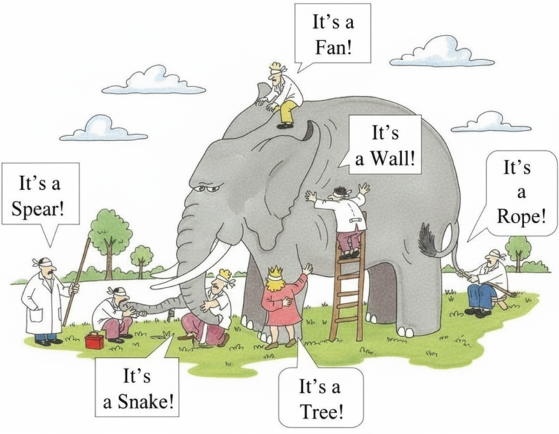

성경 어떻게 읽어야 할까요? 1편 성경, 점이 아닌 선으로 읽어야 하는 이유 [부제 : 흩어진 구슬을 꿰어 보배로 만드는 성경 읽기 첫걸음] 안녕하세요~!! 빌드업 메시지입니다. 오늘은 성경을 통합적으로 읽는 길을 안내하려고 합니다. 여러분혹시 ‘성경’ 하면 무엇이 떠오르시나요? 다윗과 골리앗, 노아의 방주, 예수님의 기적… 마치 밤하늘의 별처럼 밝게 빛나지만, 서로 연결되지 않은 채 흩어져 있는 이야기들의 모음처럼 느껴지진 않으셨나요?

많은 분들이 성경을 이렇게 ‘점’으로 이해합니다. 위로가 필요할 때 좋은 구절 하나, 삶의 지혜가 필요할 때 잠언 한 구절을 찾아 읽는 식이죠. 물론 이런 ‘말씀 한 조각’도 큰 힘을 주지만, 그것만으로는 성경이라는 거대한 보물 지도의 진정한 가치를 발견하기 어렵습니다.
앞으로 빌드업 메시지에서는 성경의 흩어진 점들을 연결하여 위대한 ‘선’으로, 흩어진 구슬들을 꿰어 아름다운 ‘목걸이’로 만드는 '통합적 성경 읽기'의 세계로 여러분을 초대하려고 합니다. 1. 왜 성경을 ‘통합적으로’ 읽어야 할까요? (파편화의 위험) 코끼리의 다리만 만진 장님, 코만 만진 장님의 이야기를 아실 겁니다. 각자 자기가 만진 것이 코끼리의 전부라고 주장하지만, 누구도 코끼리의 온전한 모습을 보지 못했죠.

이처럼 성경을 파편적으로, 즉 부분만 따로 떼어 읽는 것은 이와 같습니다. 오해와 왜곡을 낳습니다 : 문맥 없이 한 구절만 떼어내면, 원래 의도와 전혀 다른 의미로 해석될 수 있습니다. "네 시작은 미약하였으나 네 나중은 심히 창대하리라" (욥기 8:7)는 말씀은 흔히 사업장의 개업식에서 축복의 의미로 쓰이지만, 사실은 고난받는 욥에게 친구가 "네가 죄를 회개하면 하나님이 축복하실 거야"라고 정죄하며 한 말이었습니다.
전체 문맥을 모르면 말씀의 진짜 의미를 놓치게 됩니다. 이야기의 핵심을 놓칩니다 : 성경은 66권의 각기 다른 책인 동시에, 하나님의 위대한 구원 계획이라는 하나의 거대한 줄거리를 가진 통일된 책입니다. 창세기부터 요한계시록까지 모든 이야기는 예수 그리스도라는 주인공을 향해 달려갑니다. 이 큰 그림을 보지 못하면, 우리는 구약의 제사법이나 신약의 복음을 단편적인 종교 규칙이나 교훈으로만 이해하게 됩니다. 2. 성경을 대하는 첫 마음가짐 : "전체 그림을 보려는 겸손한 학습자" 그래서 성경을 읽기 전, 우리는 이런 마음을 가져야 합니다. "하나님, 제가 이 말씀 한 조각이 아니라, 이 말씀이 담고 있는 전체 그림을 이해하게 해주세요." 이것이 바로 성경을 '하나님의 말씀'으로 대하는 태도입니다. 내가 원하는 부분만 취사선택하는 '소비자'가 아니라, 전체 설계도를 이해하려는 '학습자'의 자세로 나아가는 것입니다. 때로는 이해하기 어렵고, 때로는 나의 생각과 다른 부분을 만나더라도, 이 모든 것이 하나의 위대한 이야기를 이루는 필수적인 조각임을 믿고 인내심을 갖고 읽어 나가는 것이죠. "너는 진리의 말씀을 옳게 분별하며 부끄러울 것이 없는 일꾼으로 인정된 자로 자신을 하나님 앞에 드리기를 힘쓰라" (디모데후서 2:15) 여기서 '옳게 분별하며'라는 말은, 나무 한 그루의 특징뿐 아니라 숲 전체의 지도를 함께 보며 길을 찾는 것을 의미합니다. 그렇다면 성경을 통합적으로 읽기 어렵게 만드는 장애물은 무엇일까요? 다음편에서 "성경이 어려운 3가지 진짜 이유 (ft. 조각난 그림을 맞추기 힘든 이유)"에서는 우리가 왜 자꾸 성경을 파편적으로 읽게 되는지, 그 근본적인 이유를 파헤쳐 보겠습니다. 그 이유를 알면, 해결의 길이 보일 것입니다.